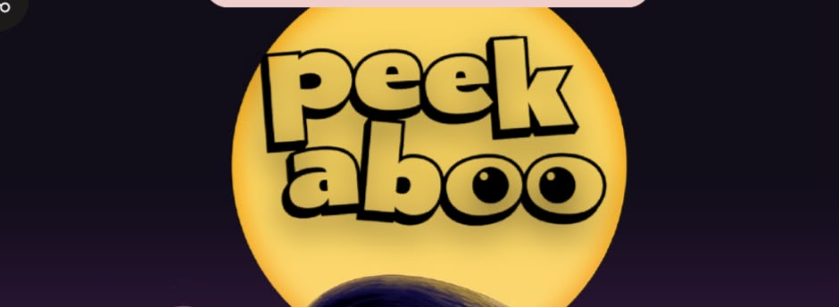
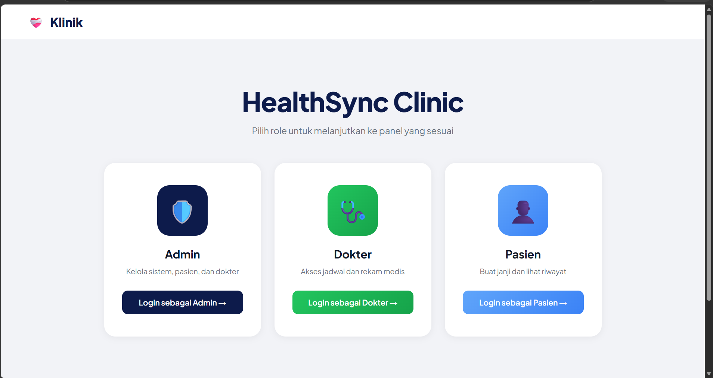

Mini PIBIEL — Steganografi Gambar
Proyek PBL semester 1: aplikasi steganografi untuk menyisipkan dan mengekstrak pesan tersembunyi di dalam gambar.
- Steganografi
- Python
// proyek & riset
Proyek Project Based Learning (PBL) yang aku kerjakan selama kuliah di Politeknik Negeri Batam, dari semester 1 sampai sekarang.

Proyek PBL semester 1: aplikasi steganografi untuk menyisipkan dan mengekstrak pesan tersembunyi di dalam gambar.

Proyek PBL semester 2: pembuatan infrastruktur web untuk klinik kecil dengan tiga peran pengguna — pasien, dokter, dan admin.